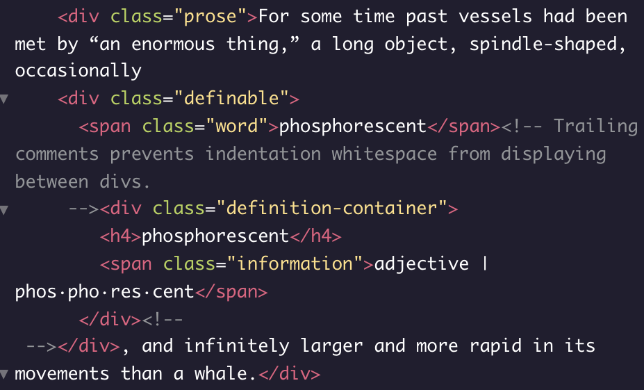
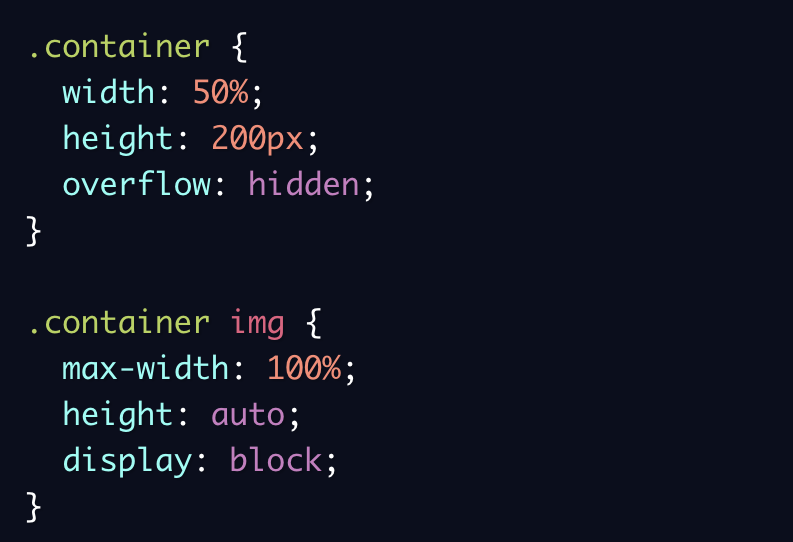
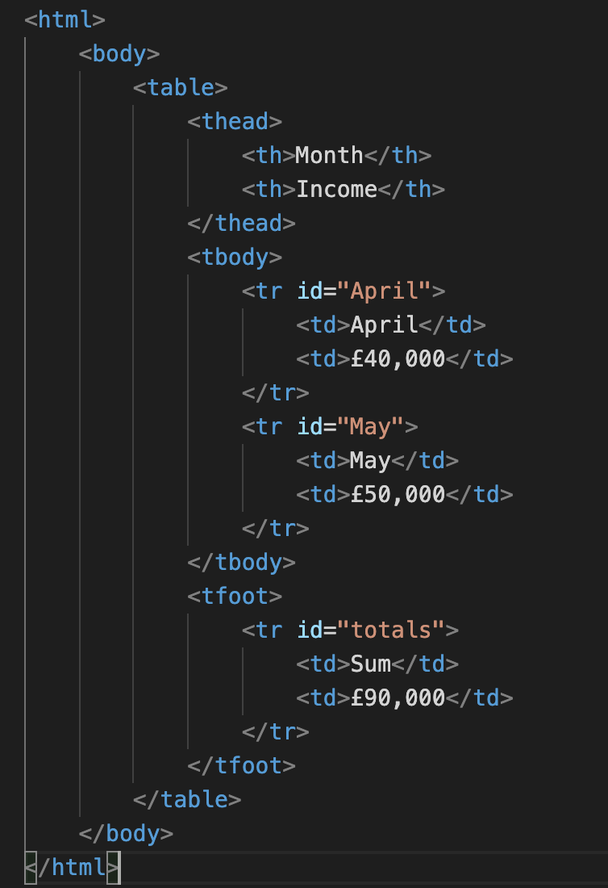
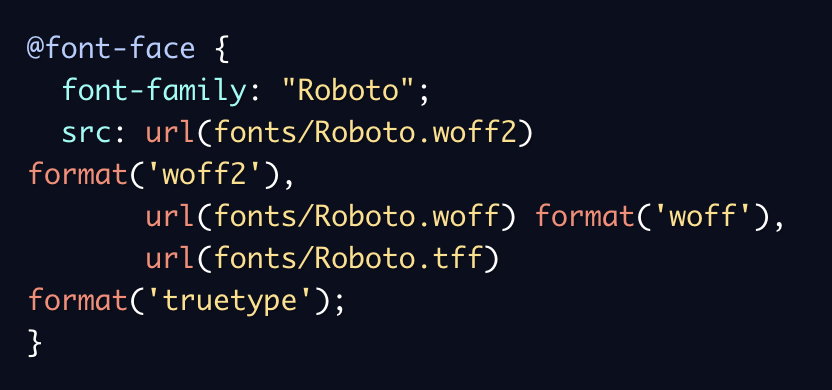
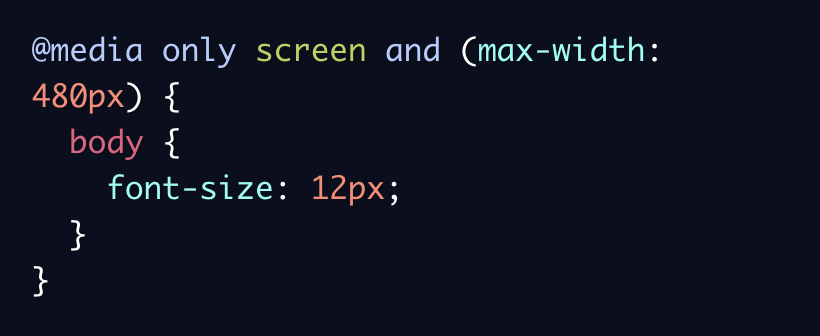
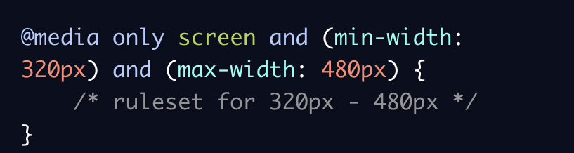
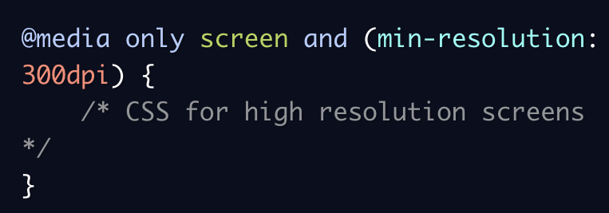
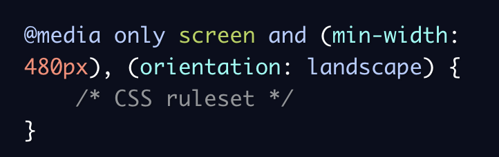
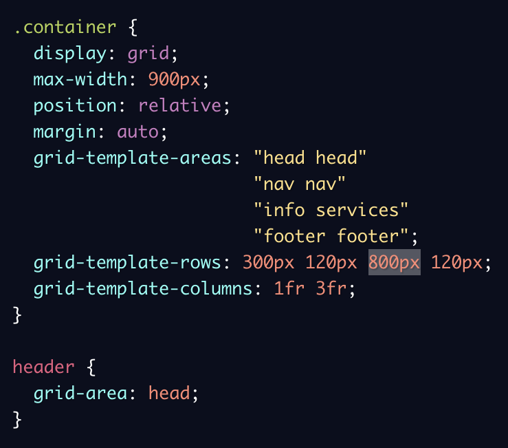
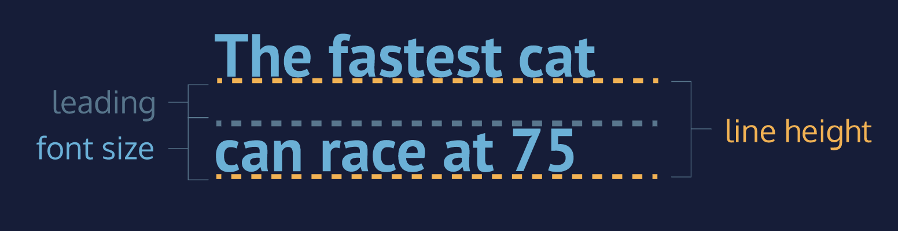

HTML
Basics
| Element | Attribute | Comment | Example |
|---|---|---|---|
| element structure | - | Within the opening and closing !tags is the !content; all together this is an !element | <content is within tags> = element |
| !DOCTYPE Declaration | - | The declaration is needed for browsers to recognise the type of the document to process (it defaults to HTML5) | <!DOCTYPE html> |
| html | lang="en" dir="ltr" |
An html element should be included at the top (after the !DOCTYPE declaration) and closed at the bottom of the html file. The attributes indicate that the language of the file is english and reading direction is left-to-right | <html></html> |
| head | - | Contains the title of the page and the CSS stylesheet link | <head></head> |
| title | Displays the title of the tab and the appearance of the website link in a search enginge | <title>Webpage Name</title> | |
| CSS link | href | The linking of the CSS file must be done with the appropriate relative path from the root folder (or an absolute path) | <link rel="stylesheet" type="text/css" href="stylesheet.css">* |
| style | - | Contains CSS styling if the styling isn't applied in a separate .css file |
<style> |
| body | - | The body element contains all the contents of an HTML document, such as text, hyperlinks, images, tables, lists, etc. An easy exemple is the footer element - you should put it inside the body, but outside the main, as you will do with menu, or sidebar. | <body></body> |
| header | - | Usually contains navigation around the website and the page | <header></header> |
| main | - | Represents the dominant content of the body of a document. The content inside the main element should be unique to the document. It should not contain anycontent that is repeated across documents such as sidebars, navigation links, copyright information, site logos, and search forms. | <main></main> |
| footer | - | Typically contains information such as contact information, copyright information, terms of use, site Map, reference to top of page links | <footer></footer> |
| - | class |
|
<section class="food"> |
| - | id |
|
<section class"vegetarian food"> |
| navigation | - | A nav element is used to define a block of navigation links such as menus and tables of contents. It is important to note that |
<nav> |
| link | - | The link can be using a relative or an absoluthe path to a document; it can also be used for on-the-page navigation, wrapping media or anything that can be turned into a link. target="_blank" opens the link in a new tab or window depending on the configuration of the browser | <a href="URL, ID or relative path" target="_blank"></a> |
| Indentation between divs | - | Trailing comments prevents indentation whitespace from displaying between divs. |  |
| hr | - | The HTML 'hr' element represents a thematic break between paragraph-level elements: for example, a change of scene in a story, or a shift of topic within a section. It creates a line that separates the sections from each other | <></> |
| div | class id |
div's id attribute can be helpful for navigation and CSS purposes. These can also be replaced or complemented by 'sections' | <div class="front" id="pocket23">This is a pocket on the front of the website</div> |
| section | class id |
sections are similar to divs, but content inside is usually grouped by a theme - it defines elements in a document, such as chapters, headings, or any other area of the document with the same theme | <section class="players"> Messi - FC Barcelona Ronaldo - Real Madrid etc</section> |
| article | class id |
The 'article' element holds content that makes sense on its own. 'article' can hold content such as articles, blogs, comments, magazines, etc. An 'article' tag would help someone using a screen reader understand where the article content (that might contain a combination of text, images, audio, etc.) begins and ends | <article>This is a news paper article about brown bears</article> |
| aside | class id |
The 'aside' element is used to mark additional information that can enhance another element but isn’t required in order to understand the main content. This element can be used alongside other elements such as 'article' or 'section'. Some common uses of the 'aside' element are for:
|
<aside> Footnotes: </aside> |
| p | style em strong |
p starts a new paragraph and is a block element | <p>new paragraph</p> |
| span | style em strong |
has the same function as p, but is an inline element | <span>inline text</span> |
| em strong |
- | 'em' is for formatring in italics while 'strong' is for formatting in bold | <em>EXAMPLE</em> <strong>EXAMPLE</strong> |
| h1 - h6 | style | headings can go from h1 (most senior) to h6 (least senior) and each have their own styling | <h2>Sub-heading</h2> |
| ul/ol | - | We can create unordered lists with ul tags and ordered lists with ol tags. li tags don't necessarily need to be closed. The links inside the li elements are called anchor elements. | <ul> List:
|
| img | src alt height width |
Images and other elements can be nested within a tags to make them hyperlinks. It's good practice to inclide the 'alt' attribute for an img tag to describe the image for the visually imparied and better search engine recognition. img is a self-closing tag In the example below .container represents a container div. It is set to a width of 50% (half of the browser’s width, in this example) and a height of 200 pixels. Setting overflow to hidden ensures that any content with dimensions larger than the container will be hidden from view. The second CSS rule ensures that images scale with the width of the container. The height property is set to auto, meaning an image’s height will automatically scale proportionally with the width. Finally, the last line will display images as block level elements (rather than inline-block, their default state). This will prevent images from attempting to align with other content on the page (like text), which can add unintended margin to the images. It’s worth memorizing the entire example above. It represents a very common design pattern used to scale images and videos proportionally. If the image is larger than the container, the vertical portion of the image will overflow and will not display. To swap this behavior, you can set max-height to 100% and width to auto (essentially swapping the values). This will scale the height of the image with the height of the container instead. If the image is larger than the container, the horizontal portion of the image will overflow and not display.  |
<img src="path" alt="description"/> |
| video | src height width controls autoplay loop |
Video tags can include height, width, control, autoplay and loop attributes. In the event the video is inaccessible, the content within the tags will be displayed | <video src="https:" height="240" width="320" controls autoplay loop>Video not available</video> |
| audio | type="audio/mp3" autoplay controls |
the audio tag has to include the attributes within its tag, but it has to include the path as the content | <audio autoplay controls> <source src="path" type="audio/mp3"> </audio> |
| embed | - | Media such as audio, video, gifs and files from an external source can be also embedded with the self-closing embed tag | <embed src="path"> |
| figure | img alt style |
the figure element has an optional caption and is a single unit outside the main flow of the document and can be removed without changing the document's meaning | <figure><img src="path" alt="description"/></figure> |
| <></> |
Tables
| Element | Comment | Example |
|---|---|---|
| table | Just like an html document, tables have a head, body and footer and the entire table must sit within the table element |  |
| thead | The thead elements uses table headings (th) tags and is only used for table headings - use thead to encapsulate an entire row (or rows) to designate them as the table header | <thead></thead> |
| tbody | he elements inside a table body are table rows (tr) which contain table data (td) | <tbody></tbody> |
| tfoot | Table footers are usually used for the last rows of the table which include sums and totals | <tfoot></tfoot> |
| th | th is used to style a specific cell as a header cell rather than an ordinary data cell | <th>MONTH</th> |
| tr | tr creates a row within which td can be specified in designated columns | <tr id="April">April</tr> |
| td | td is used to contain the data within the table in the specified row and specified column td can also span the cell across 1+ rows or columns with 'rowspan' (span vertically) and 'colspan' (span horizontally) |
<td colspan="2">£50,000</td> |
Forms
| Topic | Comment | Example |
|---|---|---|
| form | Form is a self-closing tag. The 'form' element is responsile for collection information and sending it somewhere else. The action attiribute indicates the location of where the form goes. The method attribute specifies how to send form-data (the form-data is sent to the page specified in the action attribute). The form-data can be sent as URL variables (with method="get") or as HTTP post transaction (with method="post"). GET - Default. Appends the form-data to the URL in name/value pairs: URL?name=value&name=value
|
<form action="submission.html" method="POST"> |
| validation | There are different types of validation. server-side validation is when data is sent to another machine (server) (check passwords), whereas client-side validation is used when we want to check the data in the browser (check password is at least 8 characters long) (occurs before data is sent to the server to match the username and passwords to their pairs). Client-side validation is helpful in giving feedback to clients without waiting to send and receive data to/from server | - |
>
| Input Types | |||
|---|---|---|---|
| label | - | Creates a label for the input box and links them together by 'for' and 'id' attributes | <label for="username">Username:</label> |
| text | type="text" id name minlength maxlength required pattern |
Input type 'text' creates a (small) field for the user to enter text - usually used for usernames and passwords and the like. Input is a self-closing tag. In the 'type' attribute we indicate the type of information that is going to be received - whether it's text, numbers, password, etc. The 'id' attribute helps us link the input with the appropriate label and the 'name' attribute sends the value from the input together with the input's name for ease of processing on the other (receiving) end i.e. value is paired with name - name=value The 'minlength-maxlength' attriubutes help set the min max values for a text type input The 'required' attribute prevents the form from being submitted without input value in this field If we want user input to follow specific guidlines, we use the 'pattern' attribute and assign it a regular expression (regex) i.e. a sequence of characters that make up a search pattern. The regex (or class) is indicated in square brackets, while the character count is indicated in curly braces. Here the plus sign is a quantifier and means one or more times. {3} - exactly three times; {2,4} - two to four times; {3,} - three or more times; {*} - zero or more times; {?} - once or none |
<label for="username">Username:</label> <input type="text" id="username" name="username" required minlength="3" maxlength="20" pattern="[0-9a-zA-Z]+{3,20}"> |
| password | type="password" id name minlength maxlength required pattern |
Passwords have their own attribute type and can be assigned all of the same attributes and patterns as text | <label for="password">Password:</label> <input type="password" name="password" id="password" required minlength="8" pattern="regex"> |
| number | type="number" id name step="x" value="x" min="x" max="x" |
The 'step' lets the user increase or decrease (with little arrows om the side) by the specified amount, while the value displays a default value, which in this case is 2. The 'min-max' attriubutes help set the min max values for a number type input |
<label for="amount">Number:</label> <input type="number" name="amount" id="amount" step="1" value="5" min="1" max="4"> |
| range | type="range" id name step="x" value="x" min="x" max="x" |
The 'range' attribute creates a ranged input with a default value, min and max quantities and step attribute as a slider | <label for="doneness">How rare should the steak be?</label> <input type="range" name="doneness" id="doneness" value="3" min="1" max="5" step="0.5"> |
| checkbox | type="checkbox" id name value="x" |
The value should be the same as the label id, so that the receiving end knows what the checkmark is for. However the name 'topping' helps group the inputs together | <label for="lettuce">Lettuce</label> <input type="checkbox" name="topping" id="lettuce" value="lettuce"> <label for="tomato">Tomato</label> <input type="checkbox" name="topping" id="tomato" value="tomato"> |
| radio | type="checkbox" id name value="x" |
Input type 'radio' allows for one selection. The name helps group the options together, id matches the input to the label and the name sends the selected value (name=value) to the server | <label for="yes">Yes</label> <input type="radio" name="cheese" id="yes" value="yes"> <label for="no">No</label> <input type="radio" name="cheese" id="no" value="no"> Would you like to add cheese? |
| dropdown list | select name select id options |
This creates a dropdownlist. When this information is submitted the name of the select together with the value selected are sent through | <label for="bun">What type of bun would you like?</label> <select name="bun" id="bun"> <option value="sesame">Sesame</option> <option value="potato">Potato</option> <option value="pretzel">Pretzel</option> |
| datalist | type="datalist" datalist id options |
Input type = datalist where you can type, but still have options. If none of the options provided are chosen by the client, the user's input in sent through as the value paired with the input name. The input attribute 'list' links the input with the datalist id | <label for="sauce">What type of sauce would you like?</label> <input list="sauces" id="sauce" name="sauce"> <datalist id="sauces"> <option value="Ketchup"></option> <option value="Mayo"></option> <option value="Garlic"></option> </datalist> |
| textarea | type="textarea" id name rows cols |
textarea element is used to create a bigger text field for users to write more text - the rows and the columns need to be specified and the content displays a default message | <label for="extra">Anything else?</label> <textarea id="extra" name="extra" rows="3" cols="25">Please insert comment</textarea> |
| submit | type="submit" value |
Creates the submit button. If no value is specified, displays 'submit' by default | <input type="submit" value="Send"> |
Cascading Style Sheets
Rules
| Topic | Comment | Example |
|---|---|---|
| CSS Units |
Absolute Lengths:
Relative measurements offer an advantage over hard coded measurements, as they allow for the proportions of a website to remain intact regardless of screen size or layout. Relative Lengths:
|
- |
| Inline Styles | Used to style the element directly inside of itself within the HTML file | <p style="text-align: center; color: blueviolet;">Hello World!</p> |
| Style tag | Used to insert html styling directly within the HTML file, inside the 'head' element | <style> p { margin: 0 auto; } </style> |
| Styling hierarchy | 1: !important; 2: ID; 3: class; 4: tag/td> | - |
| Classes | Classes are used to style elements in CSS. It's possible to assing multiple classes to one HTML element | <section class="center blue bold"> CSS: .class { .. |
| IDs | Then, CSS can select HTML elements by their id attribute. To select an id element, CSS prepends the id name with a hashtag (#) | <div id="tempC"> CSS: #tempC { .. |
| Multiple selectors | We can style multiple selectors by separating them with a comma | h1, h2, .col5, #widebox { .. |
| Chaining tags and classes | i.e. combining multiple selectors. The code below would select only the h2 elements that have a class of destination. If a p element also had a class of destination, the rule in the example would not style the paragraph. | <h2 class="destination"></h2> CSS: h2.destination { .. |
| Chaining IDs and classes | i.e. combining multiple selectors. The code below would select only the
class elements that have BOTH in ID of h2 and a class of destination. If a p element
also had an ID of h2 or class of destination, the rule in the example would not
style the paragraph. You can chain tags, ID and classes however you like, except you can't chain tags to IDs (#IDtag) and you can't chain tags to classes (.classtag) |
<h2 class="destination" id="h2"></h2> CSS: #h2.destination {.. |
| Nesting | It's possible to select to style elements/classes that are nested within other HTML elements. REVISIT this, as information varies in all sources! | <div
class="description"> <h5>Topic</h5> </div> CSS: .decription h5 OR CSS: table tr th (tags only) |
| !important | There is one thing that is even more specific than IDs: !important. !important can be applied to specific attributes instead of full rules. It will override any style no matter how specific it is. As a result, it should almost never be used. Once !important is used, it is very hard to override. | p { color: red !important; } |
| Two+ word font names | When the name of a typeface consists of more than one word, it’s a best practice to enclose the typeface’s name in quotes | h1 { font-family: "Courier New"; } |
| Loading fonts | 1. The link to the font must be pasted before the style sheet link in the head element, because it needs to load before the stylesheet loads. 2. The link to the font can also be pasted into the browser, from where the required 'latin'-labelled instructions can be copy-pasted directly in the top of the CSS file. 3. While Google Fonts and other resources can broaden font selection, you may wish to use an entirely different font or abstain from using a font from an external service and indicate a relative path instead. Fonts can be of different formats (tff, woff, woff2) so it's important to specify all of them when using own fonts. |
 |
| Margin collapse | Horizontal margins (left and right), like padding, are always displayed and added together. For example, if two divs with ids #div-one and #div-two, are next to each other, they will be as far apart as the sum of their adjacent margins. Unlike horizontal margins, vertical margins do not add. Instead, the larger of the two vertical margins sets the distance between adjacent elements. In this example, the vertical margin between the img1 and img2 elements is 30 pixels. Although the sum of the margins is 50 pixels, the margin collapses so the spacing is only dependent on the img2 bottom margin. |
img1 { margin: 20px; } img2 { margin: 30px; } |
| Total size | All of the components of the box model comprise an element’s size. For example, an image that has the following dimensions is 364 pixels wide and 244 pixels tall.
The total dimensions (364px by 244px) are calculated by adding all of the vertical dimensions together and all of the horizontal dimensions together. Sometimes, these components result in an element that is larger than the parent’s containing area (to solve this problem use overflow) |
- |
| Reset to default | All major web browsers have a default stylesheet they use in the absence of an external stylesheet. These default stylesheets are known as user agent stylesheets. User agent stylesheets often have default CSS rules that set default values for padding and margin. This affects how the browser displays HTML elements, which can make it difficult for a developer to design or style a web page. Many developers choose to reset these default values so that they can truly work with a clean slate. | * { margin: 0; padding: 0; } |
| Media Queries | CSS uses media queries to adapt a website’s content to different screen sizes. With media queries, CSS can detect the size of the current screen and apply different CSS styles depending on the width of the screen. The media query in the example defines a rule for screens smaller than 480 pixels (approximately the width of many smartphones in landscape orientation)
|
  |
| Screen Resolution (DPI/DPC) | Many times we will want to supply higher quality media (images, video, etc.) only to users with screens that can support high resolution media. Targeting screen resolution also helps users avoid downloading high resolution (large file size) images that their screen may not be able to properly display. To target by resolution, we can use the min-resolution and max-resolution media features. These media features accept a resolution value in either dots per inch (dpi) or dots per centimeter (dpc). The and operator can be used to require multiple media features. Therefore, we can use the and operator to require both a max-width of 480px and to have a min-resolution of 300dpi. By placing the and operator between two media features, the browser will require both media features to be true before it renders the CSS within the media query. If only one of multiple media features in a media query must be met, media features can be separated in a comma separated list. For example, if we needed to apply a style when only one of the below is true: 1) The screen is more than 480 pixels wide OR 2) The screen is in landscape mode - we could write the media features separated by commas, as is shown in the second example. (note that the second media feature is orientation. The orientation media feature detects if the page has more width than height. If a page is wider, it’s considered landscape, and if a page is taller, it’s considered portrait) |
  |
| Breakpoints | The points at which media queries are set are called breakpoints. Breakpoints are the screen sizes at which your web page does not appear properly. Rather than set breakpoints based on specific devices, the best practice is to resize your browser to view where the website naturally breaks based on its content. The dimensions at which the layout breaks or looks odd become your media query breakpoints. Within those breakpoints, we can adjust the CSS to make the page resize and reorganize. List of breakpoints by device width. | - |
{kind=link}
Grids
| Topic | Comment | Example |
|---|---|---|
| Creating a grid | To set up a grid, you need to have both a grid container and grid items. The grid container will be a parent element that contains grid items as children and applies overarching styling and positioning to them. To turn an HTML element into a grid container, you must set the element’s display property to grid (for a block-level grid) or inline-grid (for an inline grid). Then, you can assign other properties to lay out the grid. By default, grids contain only one column. If you were to start adding items, each item would be put on a new row; that’s not much of a grid! To change this, we need to explicitly define the number of rows and columns in our grid. Creating two or more columns can be done with grid-template-columns. Setting the length of the columns using % requires the width of the grid to be specified. Similary, grid-template-rows defines the number of rows and sets each row’s height. When using percentages in these two properties, remember that rows are defined as a percentage of the grid’s height, and columns are defined as a percentage of its width. The property grid-template can replace the previous two CSS properties. When using grid-template, the values before the slash will determine the size of each row. The values after the slash determine the size of each column. |
.grid { width: 1000px; grid-template-columns: 200px 50%; grid-template-rows: 100px 50% 100px; } is the same as .grid {width: 1000px; grid-template: 100px 50% / 200px 50%; } |
| Using fractions in grids | By using the fr unit, we can define the size of columns and rows as a fraction of the grid’s length and width. This unit was specifically created for use in CSS Grid. Using fr makes it easier to prevent grid items from overflowing the boundaries of the grid. In this example, the grid will have three rows and three columns. The rows are splitting up the available 400 pixels of height into four parts. The first row gets two of those parts, the second row gets one, and the third row gets one. Therefore the first row is 200 pixels tall, and the second and third rows are 100 pixels tall. Each column’s width is a fraction of the available space. In this case, the available space is split into five parts. The first column gets one-fifth of the space, the second column gets three-fifths, and the last column gets one-fifth. Since the total width is 1000 pixels, this means that the columns will have widths of 200 pixels, 600 pixels, and 200 pixels respectively. It is possible to use fr with other units as well (1fr 60px 1fr). When this happens, each fr represents a fraction of the available space. In this example, 60 pixels are taken up by the second column. Therefore the first and third columns have 40 available to split between them. Since each gets one fraction of the total, they both end up being 20 pixels wide. |
grid { display: grid; width: 1000px; height: 400px; grid-template: 2fr 1fr 1fr / 1fr 3fr 1fr; } |
| Grid repeat | The properties that define the number of rows and columns in a grid can take a function as a value. repeat() is one of these functions. The repeat() function was created specifically for CSS Grid. The first parameter of repeat indicated the amount of 'repeats' and the second parameter can have multiple values to set the length/heights of the colums/rows | grid-template-columns: repeat(3, 1fr) / 3fr 50% 1fr; |
| Grid minmax | you might want to prevent a row or column from getting too big or too small. For example, if you have a 100-pixel wide image in your grid, you probably don’t want its column to get thinner than 100 pixels! The minmax() function can help us solve this problem. Remember that to use this function, we shouldn't have a pre-defined width. | grid-template-columns: 100px minmax(100px, 500px) 100px; |
| Grid Gap | The CSS properties grid-row-gap and grid-column-gap will put blank space between every row and column in the grid. It is important to note that grid-gap does not add space at the beginning or end of the grid. In the example code, our grid will have three columns with two ten-pixel gaps between them. grid-gap that can set the row and column gap at the same time. grid-gap: 20px 10px; will set the distance between rows to 20 pixels and the distance between columns to 10 pixels. Unlike other CSS grid properties, this shorthand does not take a / between values! If only one value is given, it will set the column gap and the row gap to that value.>/td> | .grid { width: 320px; grid-template-columns: repeat (3, 1fr); grid-gap: 20px 10px; } |
| Grid Row & Column span | Using the CSS properties grid-row-start and grid-row-end, we can make single grid items take up multiple rows. The value for grid-row-start should be the row at which you want the grid item to begin. The value for grid-row-end should be one greater than the row at which you want the grid item to end. An element that covers rows 2, 3, and 4 should have these declarations: grid-row-start: 2 and grid-row-end: 5. We can use the property grid-row as shorthand for grid-row-start and grid-row-end. When an item spans multiple rows or columns using these properties, it will also include the grid-gap if any exists. For example, if an item spans two rows of height 100 pixels and there is a ten-pixel grid-gap, then the item will have a total height of 210 pixels. The previous three properties also exist for columns. grid-column-start, grid-column-end and grid-column work identically to the row properties. These properties allow a grid item to span multiple columns. When using these properties, we can use the keyword span to start or end a column or row relative to its other end. |
.item { grid-row-start: 1; grid-row-end: 3; } is the same as .item {grid-row: 1 / 3; } is the same as .item {grid-row: 1 / span 2; } is the same as .item {grid-row-start: 1; grid-row-end: span 2; } is the same as .item {grid-row-start: span 2; grid-row-end: 3; } |
| Grid Area | This property will set the starting and ending positions for both the rows and columns of an item. grid-area takes four values separated by slashes. The order is important! This is how grid-area will interpret those values. If you want elements to overlap with another item, you can set them to the same rows or columns, but set the z-index differently.
|
.item { grid-area: 2 / 2 / span 3 / span 6; |
| Grid Template Areas | The grid-template-areas property allows you to name sections of your web page to use as values in the grid-row-start, grid-row-end, grid-col-start,grid-col-end, and grid-area properties. |  |
| Justify/Align Items | justify-items is a property that positions grid items along the inline, or row, axis. This means that it positions items from left to right across the web page. align-items positions them across the column axis, from top to bottom. justify-items can be set to: start/flex-start/left, center, end/flex-end/right, stretch (stretches all items to fill the grid area), safe, unsafe, baseline/baseline-first/baseline-last, legacy, inherit, initial. align-items can be set to: flex-start, center, flex-end, stretch, baseline, initial, inherit. More information on justify-items and align-items |
.item { justify-items: center; align-items: flex-start; } |
| Justify/Align Content | When the entire grid is smaller than the space for the grid container, use justify-content to justify the grid along the row axis. We can use justify-content to position the entire grid along the row axis. This property is declared on grid containers. You can use the following values: start, end, center, stretch, space-around(includes an equal amount of space on each side of a grid element, resulting in double the amount of space between elements as there is before the first and after the last element), space-between(includes an equal amount of space between grid items and no space at either end) or space evenly(places an even amount of space between grid items and at either end). Similar to justify-content, align-content aligns the grid along the column axis and takes similar values like justify-content. More information on justify-content and align-content |
.item { justify-content: space-between; align-content: space-evenly; } |
| Justify/Align Self | Both justify-self and align-self are analogous to the equivalent properties available on the container (justify-items and align-items), but they apply on specific items that should be positioned differently than the rest of the grid items. Justify-self specifies how an individual element should position itself with respect to the row axis. This property will override justify-items for any item on which it is declared. Align-self specifies how an individual element should position itself with respect to the column axis. This property will override align-items for any item on which it is declared. Align-self and justify-self accept the same values as align-items and justify-items. More information on justify-content and align-content |
.item { justify-self: center; align-self: center; } |
| Implicit vs. Explicit Grids | The implicit grid is an algorithm built into the specification for CSS Grid that determines default behavior for the placement of elements when there are more than fit into the grid specified by the CSS. The default behavior of the implicit grid is as follows: items fill up rows first, adding new rows as necessary. New grid rows will only be tall enough to contain the content within them. CSS Grid provides two properties to specify the size of grid tracks added implicitly: grid-auto-rows and grid-auto-columns. grid-auto-rows and grid-auto-columns accept the same values as their explicit counterparts, grid-template-rows and grid-template-columns: pixels, fractions, percentages and the repeat() function. If we did not specify grid-auto-rows, the rows would be auto-adjusted to the height of the content of the grid items. The grid adds implicit rows by default. These properties are declared on grid containers. |
body { display: grid; grid: repeat(2, 100px) / repeat(2, 100px); grid-auto-rows: 50px; } |
| Grid Auto Flow | grid-auto-flow specifies whether new elements should be added to rows or columns. grid-auto-flow accepts these values:
You can pair row and column with dense, like this: grid-auto-flow: row dense;. This property is declared on grid containers. |
container { grid-auto-flow: column; } |
| Grids Guide | A complete guide to Grids | |
| Flexbox Guide | The default value of flex-shrink is 1. The default value of flex-grow is 0. Minimum and maximum widths will take precedence over flex-grow and flex-shrink. A complete guide to Flexbox | |

Declarations
| Declaration | Comment | Example |
|---|---|---|
| color | Adjusts the color of the selector. Can be specified using color keywords, RGB (numeric red, blue, green) and HSL (numeric hue, saturation and light). Colors acn also be set using Hex or hexadecimal colors, beginning with a #. To adjust opacity too use rgba(0,0,0,1) or hsla(0, 0%, 0%, 1). Alpha can only be used with RGB & HSL colors, not keywords or Hex. RGB/HEX color table HSL color table |
p { color: rgba(0,0,0); } section { background-color: #C0C0C0; } section { background-color: hsla(240, 80%, 20%, 0.4); } |
| background-color | Adjusts the background color of the selector. Can be set to: color, transparent, initial, inherit. To specify opacity, use the 4th placeholder after rgba. Color table |
section { background-color: rgba(0,0,0,0.7); } |
| font-family | Adjusts the font of the selector. Serif — fonts that have extra details on the ends of each letter. Examples include fonts like Times New Roman or Georgia, among others. Sans-Serif — fonts that do not have extra details on the ends of each letter. Instead, letters have straight, flat edges, like Arial or Helvetica. Pre-installed fonts serve as fallback fonts if the stylesheet specifies a font which is not installed on a user’s computer. Font stack |
p { font-family: Garamond, Times, serif; } |
| font-size | Length sets the font-size to a fixed size in px, cm, etc. % sets the
font-size to a percent of the parent element's font size. inherit - nherits this
property from its parent element. Initial sets this property to its default value.
Smaller sets the font-size to a smaller size than the parent element and larger sets
the font-size to a larger size than the parent element. Medium Sets the font-size to
a medium size (default); Can also be set to: xx-small; x-small; small; large; x-large; xx-large |
p { font-size: 16px; } |
| font-weight | 100-900 defines from thin to thick characters. 400 is the same as normal, and 700 is the same as bold. Can also be set to: normal, bold, bolder, lighter, initial and inherit |
p { font-weight: bold; } |
| font-style | Can be set to: normal, italic, oblique, initial and inherit | p { font-style: italic; } |
| text-align | left, right center, justify (stretches the lines so that each line has equal width, initial, inherit | p { text-align: center; } |
| text-transform | none, capitalize, uppercase, lowercase, initial, inherit | p { text-transform: capitalize; } |
| text-decoration | The text-decoration property specifies the decoration added to text, and is a shorthand property for: text-decoration-line (required; none, underline, overline, line-through, initial, inherit), text-decoration-color and text-decoration-style (solid, double, dotted, dashed, wavy, initial, inherit) | p { text-decoration-style: wavy; } |
| letter-spacing | The letter-spacing property increases or decreases the space between characters in a text. The technical term for adjusting the spacing between letters is called tracking. Can be set to: normal (default: no extra space between characters); length (cm, px, etc.); initial or inherit | p { letter-spacing: 1px; } |
| word-spacing | Increases the spacing between words in a body of text. The default amount of space between words is usually 0.25em. Can be set to: normal; length (in px, pt, cm, em, etc); initial or inherit | p { word-spacing: 0.3em; } |
| line-height | The line-height property specifies the height of a line. Can be set to: normal (default); number (a number that will be multiplied with the current font-size to set the line height - this number is an absolute value that will compute the line height as a ratio of the font size); length (cm, px, etc.); % (a line height in percent of the current font size); initial or inherit. If we change the font size, a unitless line-height would automatically readjust, whereas the pixel value would remain static.  |
p { line-height: 3%; } |
| opacity | Opacity is the measure of how transparent an element is. It’s measured from 0 to 1, with 1 representing 100%, or fully visible and opaque, and 0 representing 0%, or fully invisible. | section { opacity: 0.7; } |
| background-image | image path can be both relative and absolute | main { background-image: url("path"); } |
| background-size | The background-size property specifies the size of the background images.There are four different syntaxes you can use with this property: the keyword syntax ("auto", "cover" and "contain"), the one-value syntax (sets the width of the image (height becomes "auto"), the two-value syntax (first value: width of the image, second value: height), and the multiple background syntax (separated with comma). 1) auto - Default value. The background image is displayed in its original size 2) length - Sets the width and height of the background image. The first value sets the width, the second value sets the height. If only one value is given, the second is set to "auto". Read about length units 3)% - Sets the width and height of the background image in percent of the parent element. The first value sets the width, the second value sets the height. If only one value is given, the second is set to "auto" 4) cover - Resize the background image to cover the entire container, even if it has to stretch the image or cut a little bit off one of the edges 5) contain - Resize the background image to make sure the image is fully visible 6)initial & 7) inherit |
img { background-cover: 200px 350px; } |
| background-repeat | The background-repeat property sets if/how a background image will be repeated. By default, a background-image is repeated both vertically and horizontally. The background image is placed according to the background-position property. If no background-position is specified, the image is always placed at the element's top left corner.
|
img { background-image: repeat; ; |
| background-position | The background-position property sets the starting position of a background image. By default, a background-image is placed at the top-left corner of an element, and repeated both vertically and horizontally. Can be set to: initial, inherit, left top, left center, left bottom, right top, right center, right bottom, center top, center center, center bottom (if you only specify one keyword, the other value will be "center"). Can also be set to x% y%: the first value is the horizontal position and the second value is the vertical. The top left corner is 0% 0%. The right bottom corner is 100% 100%. If you only specify one value, the other value will be 50%. . Default value is: 0% 0%. Can also be set to xpos ypos: the first value is the horizontal position and the second value is the vertical. The top left corner is 0 0. Units can be pixels (0px 0px) or any other CSS units. If you only specify one value, the other value will be 50%. You can mix % and positions. |
box { background-position: center; } |
| position | The position property specifies the type of positioning method used for an element. There are five different position values and after the position value is chosen, are then positioned using the top, bottom, left, and right properties. However, these properties will not work unless the position property is set first. They also work differently depending on the position value. 1) static: not positioned in any special way; it is always positioned according to the normal flow of the page + static positioned elements are not affected by the top, bottom, left, and right properties. 2) relative: allows you to position an element relative to its default static position on the web page. Setting the top, right, bottom, and left properties of a relatively-positioned element will cause it to be adjusted away from its normal position. Other content will not be adjusted to fit into any gap left by the element. 3) fixed: position: fixed; is positioned relative to the viewport, which means it always stays in the same place even if the page is scrolled. The top, right, bottom, and left properties are used to position the element. A fixed element does not leave a gap in the page where it would normally have been located. 4) absolute: positioned relative to the nearest positioned ancestor (instead of positioned relative to the viewport, like fixed). However; if an absolute positioned element has no positioned ancestors, it uses the document body, and moves along with page scrolling. When an element’s position is set to absolute all other elements on the page will ignore the element and act like it is not present on the page. The element will be positioned relative to its closest positioned parent element. 5) sticky: positioned based on the user's scroll position. A sticky element toggles between relative and fixed, depending on the scroll position. It is positioned relative until a given offset position is met in the viewport - then it "sticks" in place (like position:fixed) |
p { position: relative; left: 60px; } |
| z-index | The z-index property controls how far “back” or how far “forward” an element should appear on the web page when elements overlap. This can be thought of the depth of elements, with deeper elements appearing behind shallower elements. The z-index property accepts integer values. Depending on their values, the integers instruct the browser on the order in which elements should be displayed on the web page. z-index property does not work on static elements. so position must be changed. The greater the integer, the more forward it brings the element. | h1 { z-index: 8; } |
| display | The display property specifies the display behavior (the type of rendering box) of an element. It dictates if the element can share horizontal space with other elements. Some elements fill the entire browser from left to right regardless of the size of their content. Other elements only take up as much horizontal space as their content requires and can be directly next to other elements. Inline elements (em, strong, a are all inline by default) have a box that wraps tightly around their content, only taking up the amount of space necessary to display their content and not requiring a new line after each element. The height and width of these elements cannot be specified in the CSS document. Block-level elements (div, p, footer, h1-h6 are all inline by default) fill the entire width of the page by default, but their width/height property can also be set. Unless otherwise specified, they are the height necessary to accommodate their content. Inline-block display combines features of both inline and block elements. Inline-block elements can appear next to each other and we can specify their dimensions using the width and height properties. Images are the best example of default inline-block elements. Click here to view different property values. |
box { display: inline-block; } |
| float | The float property is used for positioning and formatting content e.g. let an image float left to the text in a container. The float property can have one of the following values: left, right, none, inherit. Floated elements must have a width specified, as in the example above. Otherwise, the element will assume the full width of its containing element, and changing the float value will not yield any visible results. | img { float: left; } |
| clear | The float property can also be used to float multiple elements at once. However, when multiple floated elements have different heights, it can affect their layout on the page. Specifically, elements can “bump” into each other and not allow other elements to properly move to the left or right. The clear property specifies how elements should behave when they bump into each other on the page. It can take on one of the following values: left — the left side of the element will not touch any other element within the same containing element. right — the right side of the element will not touch any other element within the same containing element. both — neither side of the element will touch any other element within the same containing element; and none - the element can touch either side. |
div { clear: both; } |
| height | auto - the browser calculates the height (default). Length defines the height in px, cm, etc. % defines the height in percent of the containing block. Initial sets this property to its default value. Inherit inherits this property from its parent element. | box { height: 800px; } |
| width | auto - the browser calculates the height (default). Length defines the height in px, cm, etc. % defines the height in percent of the containing block. Initial sets this property to its default value. Inherit inherits this property from its parent element. | box { width: 300px; } |
| border border-top border-bottom border-left border-right |
A border is a line that surrounds an element, like a frame around a painting. Borders can be set with a specific width (thickness of the border - a border’s thickness can be set in pixels or with one of the following keywords: thin, medium, or thick), style, and color. | box { bordr: 3px dashed red; } |
| border-radius | You can modify the corners of an element’s border box with the border-radius property. 5px will set all four corners of the border to a radius of 5 pixels (i.e. the same curvature that a circle with radius 5 pixels would have). You can create a border that is a perfect circle by setting the radius equal to the height of the box, or to 100%. Four values - border-radius: 15px 50px 30px 5px; (first value applies to top-left corner, second value applies to top-right corner, third value applies to bottom-right corner, and fourth value applies to bottom-left corner). Three values - border-radius: 15px 50px 30px; (first value applies to top-left corner, second value applies to top-right and bottom-left corners, and third value applies to bottom-right corner). Two values - border-radius: 15px 50px; (first value applies to top-left and bottom-right corners, and the second value applies to top-right and bottom-left corners). One value - border-radius: 15px; (the value applies to all four corners, which are rounded equally. |
h1 { border-radius: 10px 20px; } |
| list-style | Specifies the type of list-item marker in a list. Can be set to: none; disc - circle bullet point; lower-alpha; lower-roman; square; upper-alpha; upper-roman and more | ul li { list-style: lower-roman; } |
| padding padding-top padding-bottom padding-right padding-left |
The space between the contents of a box and the borders of a box. Can be set to length (px, cm), % or inherit. Can have a single value that applies to all four sides; a double value that applies to top-bottom and left-right; four values that select padding for each side individually (applied:top, right, bottom, left); and three values that select top, right & left and bottom. If an element has a specified width (e.g. 300px), the padding(e.g. 25px) added to that element will be added to the total width of the element(i.e.= 350px). To keep the width at 300px, no matter the amount of padding, you can use the box-sizing property. This causes the element to maintain its width; if you increase the padding, the available content space will decrease. |
p { padding: 25px; box-sizing: border-box; width: 300px; } |
| margin margin-top margin-bottom margin-right margin-left |
The space between the contents of a box and the borders of a box. Can be set to length (px, cm), % or inherit. Can have a single value that applies to all four sides; a double value that applies to top-bottom and left-right; four values that select margin for each side individually (applied: top, right, bottom, left); and three values that select top, right & left and bottom. Remeber to set the width of the adjusting selector, otherwise the width of the div will be automatically set to the full width of its containing element, like the 'body', for example. You can set the margin property to 0 auto to horizontally center the element within its container. The element will then take up the specified width, and the remaining space will be split equally between the left and right margins. |
box { margin: 0 auto; } |
| box-sizing | The box-sizing property defines how the width and height of an element are calculated: should they include padding and borders, or not. Can be set to: content-box (default; the width and height properties (and min/max properties) includes only the content - border and padding are not included); border-box (the width and height properties (and min/max properties) includes content, padding and border); initial or inherit. The code in the example above resets the box model to border-box for all HTML elements. In this box model, the height and width of the box will remain fixed. The border thickness and padding will be included inside of the box, which means the overall dimensions of the box do not change. | * { box-sizing: border-box; } |
| min-height min-width |
Because a web page can be viewed through displays of differing screen size, the content on the web page can suffer from those changes in size. To avoid this problem, CSS offers two of these properties that can limit how narrow or how wide an element’s box can be sized to. Can be set to length (cm, px, etc), % or inherit. | box { min-height: 500px; min-width: 400px; } |
| overflow | The overflow property controls what happens to content that spills, or overflows, outside its box. It can be set to one of the following values: visible (default: overflow is not clipped - it renders outside the element's box); hidden (overflow is clipped, and the rest of the content will be invisible); scroll (overflow is clipped, but a scroll-bar is added to see the rest of the content); auto (if overflow is clipped, a scroll-bar should be added to see the rest of the content); initial or inherit | section { overflow: auto; } |
| visibility | Elements can be hidden from view with the visibility property. Can be set to: visible (default); hidden (but still takes up space); collapse (Only for table rows ('tr'), row groups ('tbody'), columns ('col'), column groups ('colgroup'). This value removes a row or column, but it does not affect the table layout. The space taken up by the row or column will be available for other content. If collapse is used on other elements, it renders as "hidden"); initial or inherit. Even when the visibility is set to hidden, the placeholder for the item remains in the flow of html. To remove it completely - use display: none; |
p { visibility: hidden; } |
Transitions
| Declaration | Comment | Example |
|---|---|---|
| Animatable CSS properties | Certain CSS properties can be animated using CSS Animations or CSS Transitions. Animation means that their values can be made to change gradually over a given amount of time. Learn more about CSS transitions. | - |
| Background color transitions | Say we wanted to edit the background color transition of a link when it is being hovered upon (a -> a:hover). For that, we can specify in 'a' the transition-property declaration and the transition-duration declaration. In this example transition-property declares which CSS property we will be animating. The second property, transition-duration, declares how long the transition will take — one second. Different properties transition in different ways, for example:
|
a { transition-property: background-color; transition-duration: 1s; } |
| Transition Delay | Our next transition property is transition-delay. Much like duration, its value is an amount of time. Delay specifies the time to wait before starting the transition. As with the duration property, the default value for transition-delay is 0s, which means no delay. | a { transition-delay: 650ms; } |
| Timing Function | The timing function describes the pace of the transition. The default value is ease, which starts the transition slowly, speeds up in the middle, and slows down again at the end. Other values include:
|
.gazelle { transition-timing-function: ease-in; } |
| Transition shortcut | This shorthand property describes each aspect of the transition puzzle in a single declaration. The properties must be specified in this order: transition-property, transition-duration, transition-timing-function, transition-delay. Leaving out one of the properties causes the default value for that property to be applied. There is one exception: You must set duration if you want to define delay. Since both are time values, the browser will always interpret the first time value it sees as duration. |
.gazelle { transition: color 1.5s linear 0.5s; } |
| Combining Transitions | The shorthand transition rule has one advantage over the set of separate transition- |
.gazelle { transition: color 1.5s linear 0.5s; font-size 750ms ease-in 750ms; } |
| All | It is common to use the same duration, timing function, and delay for multiple properties. When this is the case you can set the transition-property value to all. This will apply the same values to all properties. To effect this, you can use all as a value for transition-property. All means every value that changes will be transitioned in the same way. You can use all with the separate transition properties, or the shorthand syntax. | .properties { transition: all 1.5s linear 0.5s; } |
RegEx
| Topic | Comment | Example |
|---|---|---|
| Alteration | Alternation, performed in regular expressions with the pipe symbol, |, allows us to match either the characters preceding the | OR the characters after the | | baloon|gorillaz |
| Character Sets | Character sets, denoted by a pair of brackets [], let us match one character from a series of characters, allowing for matches with incorrect or different spellings. The regex con[sc]en[sc]us will match consensus, the correct spelling of the word, but also match the following three incorrect spellings: concensus, consencus, and concencus. A character class matches only a single character. gr[ae]y does not match graay, graey or any such thing. Thus the regex [cat] will match the characters c, a, or t, but not the text cat. We can make our character sets even more powerful with the help of the caret ^ symbol. Placed at the front of a character set, the ^ negates the set, matching any character that is not stated. These are called negated character sets. Thus the regex [^cat] will match any character that is not c, a, or t, and would completely match each character d, o or g. |
con[sc]en[sc]us |
| . | The wildcard . will match any single character (letter, number, symbol or whitespace) in a piece of text. They are useful when we do not care about the specific value of a character, but only that a character exists. What happens if we want to match an actual period, .? We can use the escape character, \, to escape the wildcard functionality of the . and match an actual period. The regex Howler monkeys are really lazy\. will completely match the text Howler monkeys are really lazy.. |
I ate . bananas = I ate 3 bananas I ate 8 bananas |
| Ranges | The regex [abc], which would match any character a, b, or c, is equivalent to regex range [a-c]. The - character allows us to specify that we are interested in matching a range of characters. With ranges we can match any single capital letter with the regex [A-Z], lowercase letter with the regex [a-z], any digit with the regex [0-9]. We can even have multiple ranges in the same character set. To match any single capital or lowercase alphabetical character, we can use the regex [A-Za-z]. Remember, within any character set [] we only match one character. |
[0-9A-Za-z] - matches any hexadecimal character, case insensitive |
| Shorthand Character Classes | There are shorthand character classes that represent common ranges, and they make writing regular expressions much simpler:
|
[^A-Za-z0-9_] |
| Grouping | What if we want to match the whole piece of text I love baboons and I love gorillas with the same regex? Your first guess might be to use the regex I love baboons|gorillas. This regex, while it would completely match the string I love baboons, would not match I love gorillas, and would instead match gorillas. This is because the | symbol matches the entire expression before or after itself. Grouping, denoted with the open parenthesis ( and the closing parenthesis ), lets us group parts of a regular expression together, and allows us to limit alternation to part of the regex. The regex I love (baboons|gorillas) will match the text I love and then match either baboons or gorillas, as the grouping limits the reach of the | to the text within the parentheses. |
I love baboons|gorilla[sz] I love (baboons|gorilla[sz] |
| Fixed Quantifiers | The answer is yes, with the help of quantifiers! Fixed quantifiers, denoted with curly braces {}, let us indicate the exact quantity of a character we wish to match, or allow us to provide a quantity range to match on.
An important note is that quantifiers are considered to be greedy. This means that they will match the greatest quantity of characters they possibly can. For example, the regex mo{2,4} will match the text moooo in the string moooo, and not return a match of moo, or mooo. This is because the fixed quantifier wants to match the largest number of os as possible, which is 4 in the string moooo. |
\w{1,9} |
| Optional Quantifiers | Optional quantifiers, indicated by the question mark ?, allow us to indicate a character in a regex is optional, or can appear either 0 times or 1 time. For example, the regex humou?r matches the characters humo, then either 0 occurrences or 1 occurrence of the letter u, and finally the letter r. Note the ? only applies to the character directly before it. With all quantifiers, we can take advantage of grouping to make even more advanced regexes. The regex The monkey ate a (rotten )?banana will completely match both The monkey ate a rotten banana and The monkey ate a banana. Since the ? is a metacharacter, you need to use the escape character in your regex in order to match a question mark ? in a piece of text. |
duck.? |
| Kleene Star | The Kleene star, denoted with the asterisk *, is also a quantifier, and matches the preceding character 0 or more times. This means that the character doesn’t need to appear, can appear once, or can appear many many times. The regex meo*w will match the characters me, followed by 0 or more o's, followed by a w. Thus the regex will match mew, meow, meooow, and meoooooooooooow. |
meo*w |
| Kleene plus | Another useful quantifier is the Kleene plus, denoted by the plus +, which matches the preceding character 1 or more times. The regex meo+w will match the characters me, followed by 1 or more os, followed by a w. Thus the regex will match meow, meooow, and meoooooooooooow, but not match mew. | meo+w |
| Anchors | The anchors hat ^ and dollar sign $ are used to match text at the start and the end of a string, respectively. The regex ^Monkeys: my mortal enemy$ will completely match the text Monkeys: my mortal enemy but not match Spider Monkeys: my mortal enemy in the wild or Squirrel Monkeys: my mortal enemy in the wild. The ^ ensures that the matched text begins with Monkeys, and the $ ensures the matched text ends with enemy. Without the anchor tags, the regex Monkeys: my mortal enemy will match the text Monkeys: my mortal enemy in both Spider Monkeys: my mortal enemy in the wild and Squirrel Monkeys: my mortal enemy in the wild. |
^Monkeys: my mortal enemy$ |